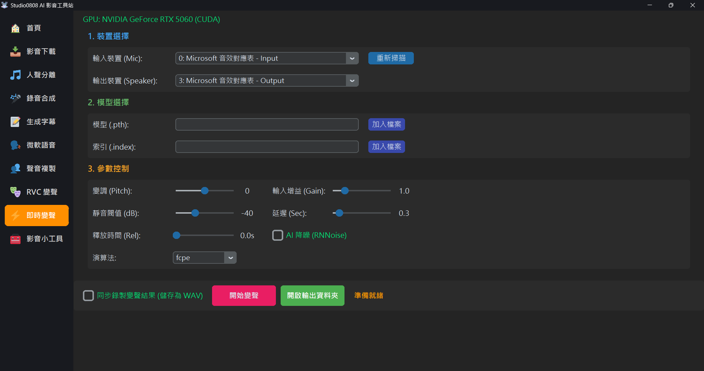

即時變聲 (Realtime Voice Conversion) 是一種極度考驗電腦算力的功能。它必須在您說話的瞬間，將麥克風捕捉到的音訊切成無數個小碎塊，經過龐大的 AI 模型推論後再播放出來。
💡 為什麼我的聲音會卡頓、甚至延遲好幾秒？
如果您沒有 NVIDIA 顯示卡 (右上角顯示紅字 使用 CPU mode)，這意味著千斤重的 AI 運算全壓在處理器上。強烈建議使用 RTX 系列以上的顯示卡遊玩即時變聲。
軟體預設的「輸出裝置」只會把聲音送到您的喇叭或耳機，這代表「變聲只有您自己聽得到」。如果您想在 Discord、Line 或是遊戲語音中使用，您必須安裝一條免費的「虛擬音源線」。
Microphone (Realtek Audio) 或 USB Audio Device。CABLE Output，否則程式會聽不到任何聲音！
CABLE Input (VB-Audio Virtual Cable)。CABLE Output (VB-Audio Virtual Cable) (從虛擬線裡面把變聲後的聲音抽出來)。| 裝置名稱 | 類別 | 說明 |
|---|---|---|
Microsoft 音效對應表 (Sound Mapper) |
✅ 系統預設 | 指向您當前 Windows 系統設定的預設裝置。 |
CABLE Input (VB-Audio Cable) |
❓ 需安裝 | 虛擬音源線。若清單中沒看到此項，請參閱下方教學安裝。 |
麥克風 (Microphone / Realtek Audio) |
⭐ 推薦輸入 | 實體麥克風。品質穩定且延遲最低，推薦用於 AI 變聲。 |
立體聲混音 (Stereo Mix) |
⚠️ 錄內音 | 側錄電腦發出的聲音。變聲時開啟會導致音訊回授(Loop)，不建議使用。 |
耳機 (Bluetooth Hands-Free) |
❌ 禁用 | 藍牙通話模式。音頻品質極差（8kHz），會導致 AI 轉換後產生嚴重雜訊。 |
若您在裝置清單中沒看到 CABLE 字樣，請照以下步驟操作：
VBCABLE_Setup_x64.exe 並選擇「以管理員身分執行」。🔌 運作流程：您講話 ➔ 本軟體 ➔ 輸出選 CABLE Input ➔ Discord 輸入選 CABLE Output。
調好這些參數，是聲音「像不像」以及「會不會破音」的關鍵！
改變說話音高 (以半音為單位)：
如果波形太小請調高；若講話稍微大聲就破音，請將 Gain 向左調低 (例如 0.8)，能減少爆音機率。
過濾背景底噪。當音量小於此數值時 AI 不會運作。若沒講話時有沙沙聲，請將滑桿向右調高。
控制在您停止說話後，AI 繼續維持輸出的緩部時間。建議設定為 0.2s - 0.5s 以獲得流暢的尾音。⚠️ 注意：若您在使用「音效對應表」時發現有重複回音，請將此項調為 0.0s。
快取切片的長度。電腦效能越強 (如 RTX 40/50 系列)，此數值可設得越低 (建議 0.2s ~ 0.4s)。若聲音斷斷續續，請將滑桿向右調高。
🚀 防延遲堆積 (Lag-Prevention)
本系統內建智慧緩衝清理技術。當 GPU 處理速度跟不上時，會自動捨棄過舊的音訊片段，確保輸出的永遠是最即時的變聲，不會產生數秒後的時差延遲。